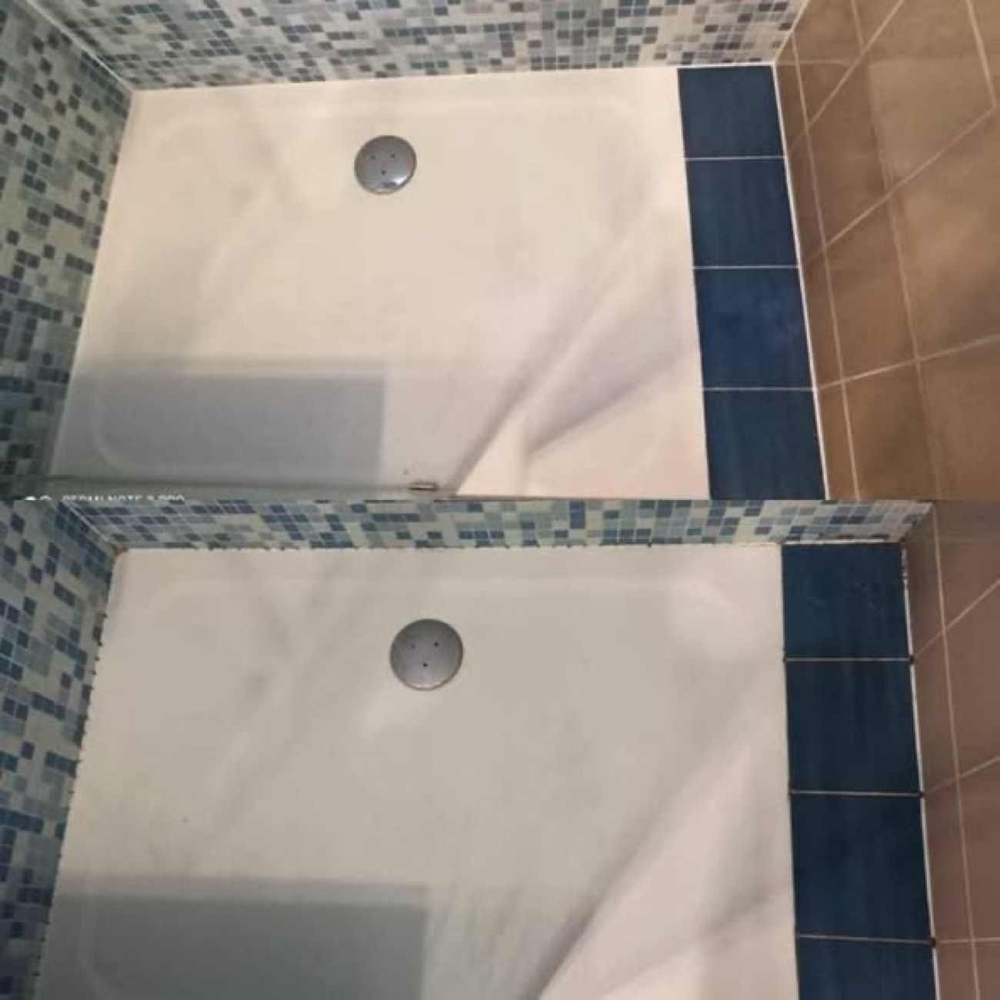
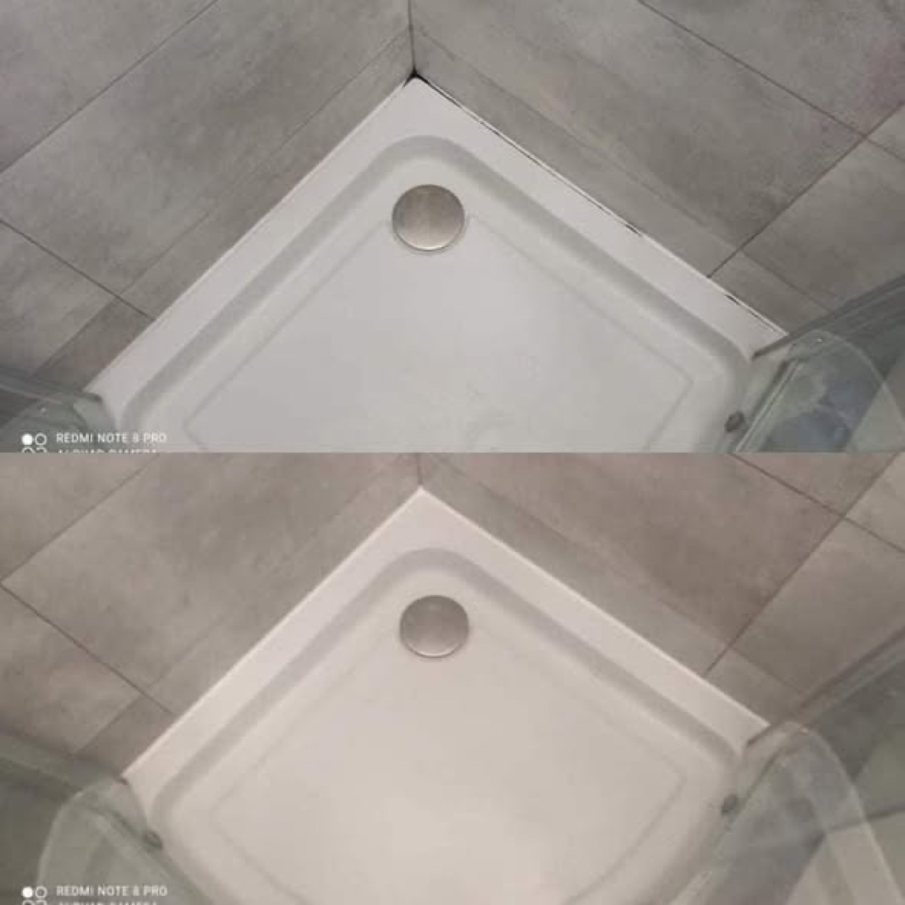
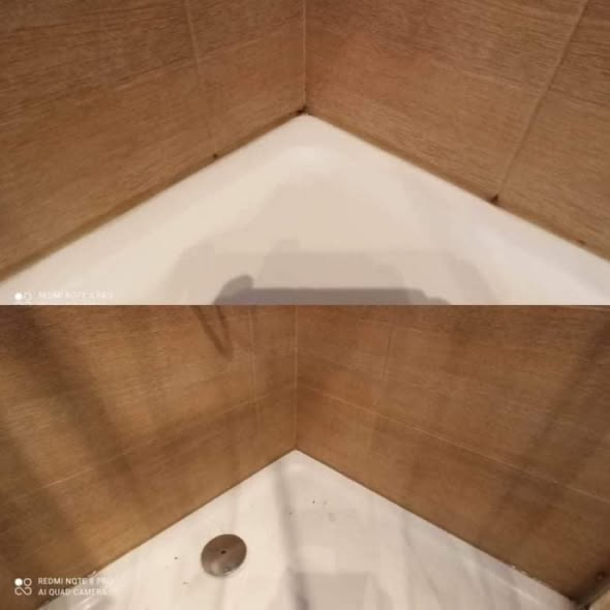
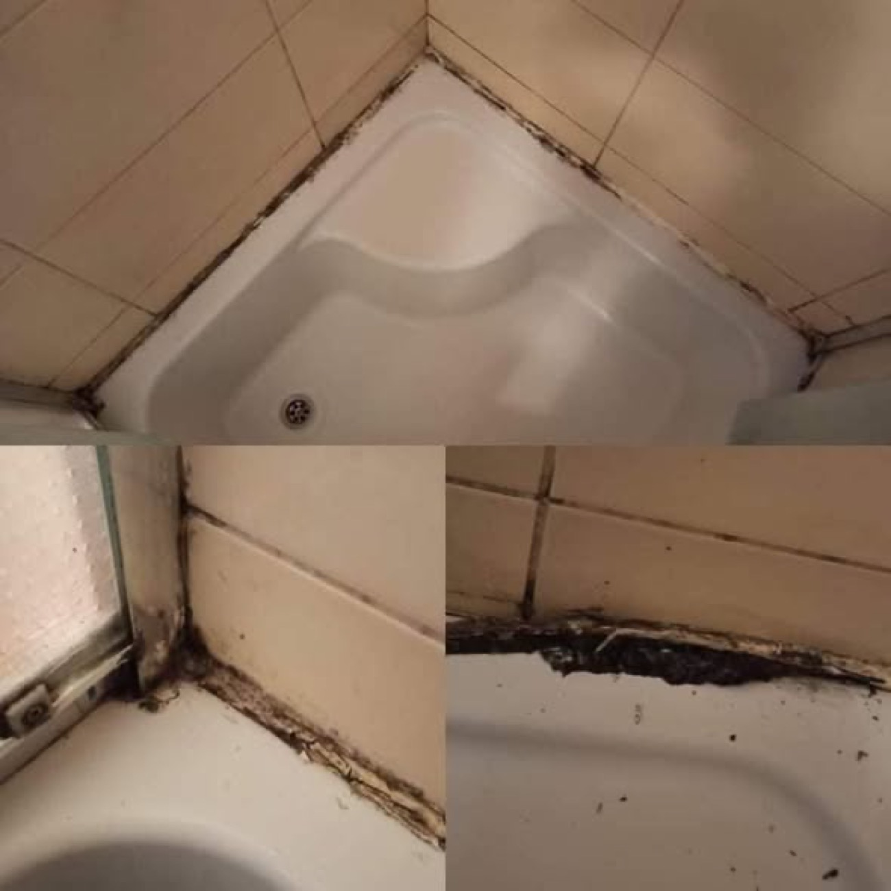
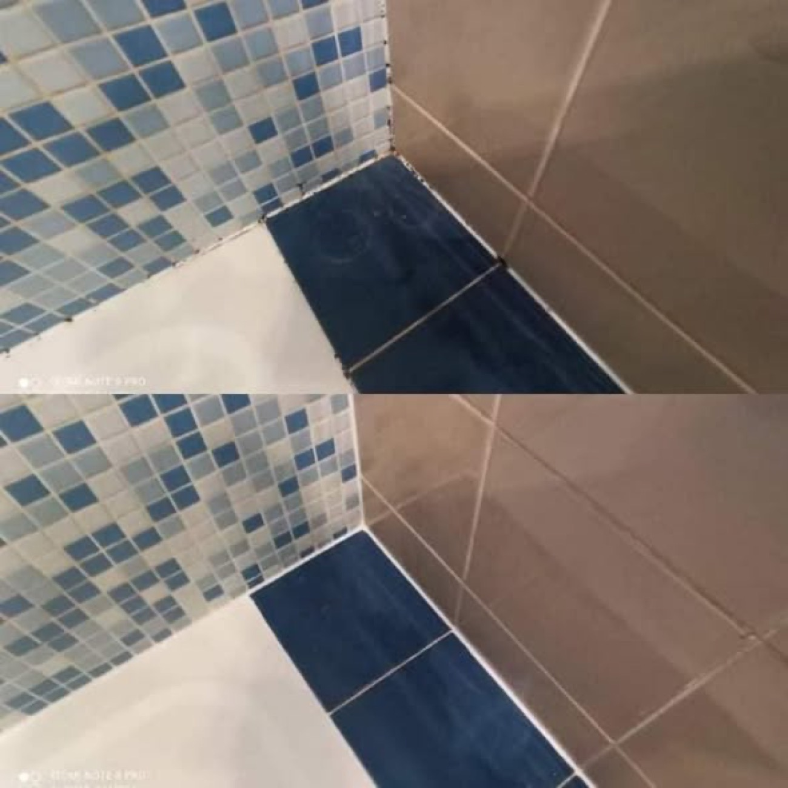
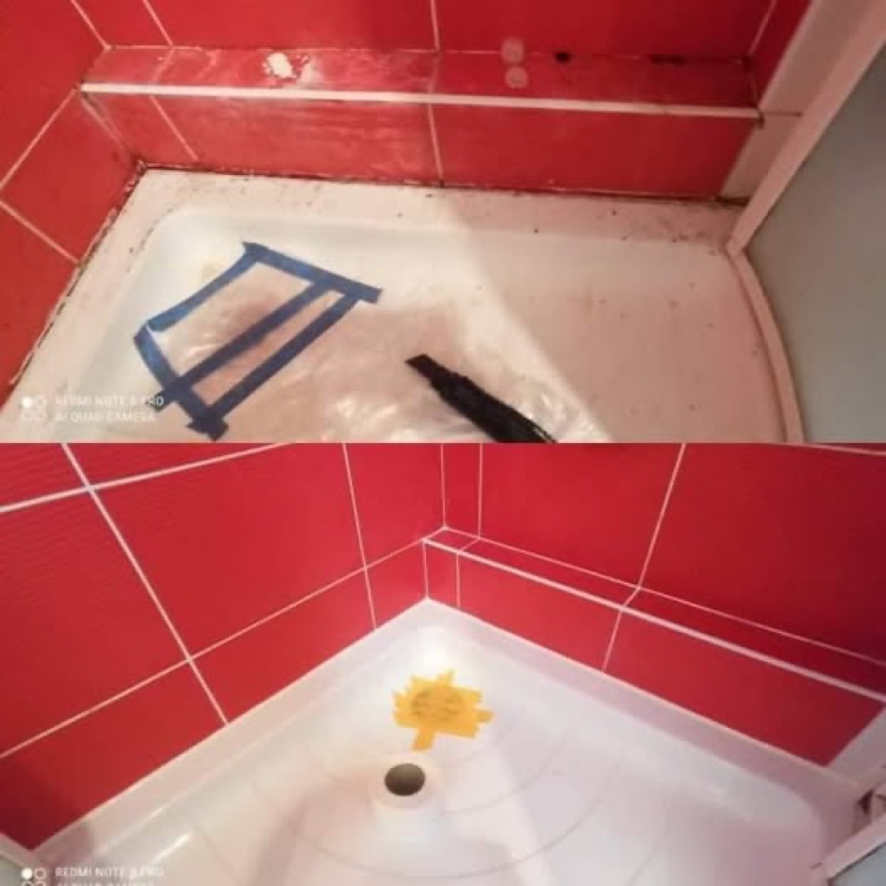
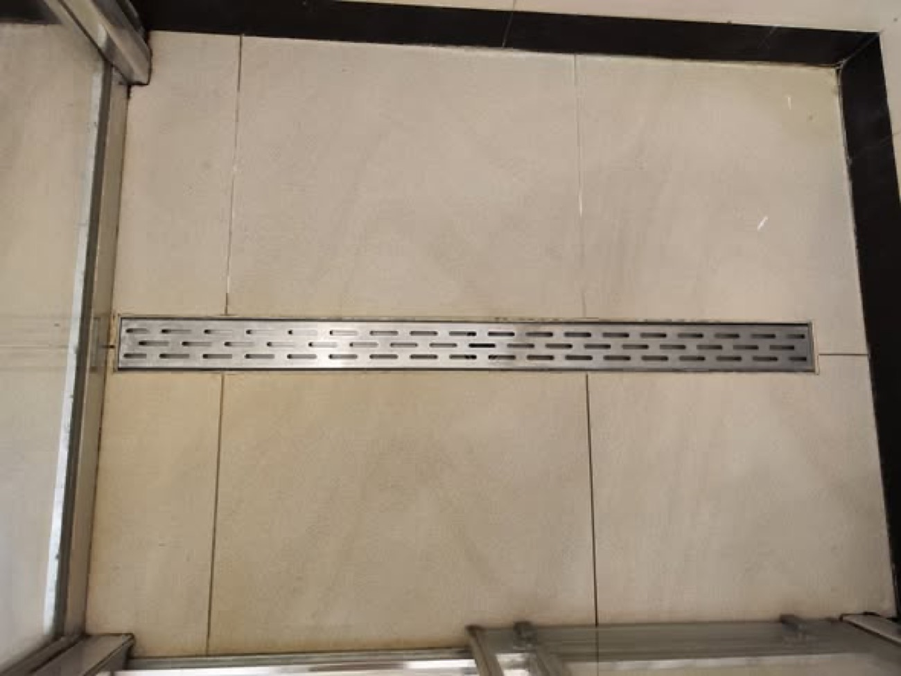

Zajmujemy się jedną, konkretną rzeczą i robimy ją dobrze: wymianą silikonu i renowacją fug w łazienkach. Powiedz, co się dzieje - poczerniały silikon, wykruszone fugi, pleśń w narożniku - a my wycenimy i umówimy termin.

Stary, poczerniały silikon wokół wanny, brodzika i umywalki wycinamy do czysta i nakładamy nowy, sanitarny z dodatkiem przeciw grzybowi. Równa, gładka fuga bez zacieków.

Wykruszone i zagrzybione fugi między płytkami wybieramy i fugujemy od nowa. Można przy okazji zmienić kolor fugi na jaśniejszy lub ciemniejszy.

Czarne naloty w narożnikach i pod silikonem usuwamy u źródła, a miejsce zabezpieczamy, żeby grzyb nie wrócił po kilku tygodniach.

Szczelina między wanną a ścianą to najczęstsze miejsce, którym woda leci pod płytki. Doszczelniamy ją porządnie, żeby nie zalewało sąsiada ani konstrukcji.

Silikon w kabinie i przy brodziku, listwy przyścienne i profile. Wymieniamy zużyte uszczelnienia i doszczelniamy miejsca, którymi przecieka.

Pojedyncza pęknięta fuga, odchodzący silikon przy blacie czy umywalce, poprawka po ekipie remontowej. Przyjedziemy i doprowadzimy do porządku.
Prosty, przewidywalny proces. Bez niespodzianek i bez naciągania.
Przyjeżdżamy, oglądamy, doradzamy. Bez opłat i bez zobowiązań.
Jasna cena i termin na piśmie - zanim cokolwiek ruszy.
Robimy zgodnie ze sztuką i na umówiony czas.
Dajemy gwarancję na robociznę i trzymamy termin.
Napisz, co chcesz zrobić - odpowiemy z propozycją i wyceną.